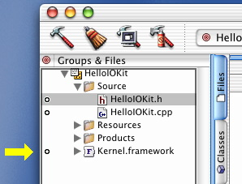

Q: When I try building my KEXT, why do I get an "incompatible
flag -framework" error?
A: You may see an error similar to the one shown in Listing 1 if you've included
the Kernel.framework, or any other framework, in your project.
incompatible flag -framework used (must specify "-dynamic" to be used)
| |
Listing 1. compiler error.
|
The Kernel.framework isn't really a framework in the traditional
sense. It's actually just a container of header files that a kernel
extension has access to. There's no need to link against it in your
project. To eliminate the error message, simply uncheck the circle to
the left of the framework inside Project Builder.

This way, you can continue to keep the Kernel.framework
in your project for quick access to header files, and the compiler won't
try to link against it.
[Dec 05 2001]
|